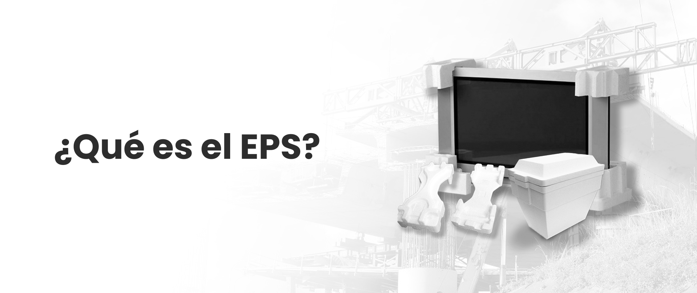

CONOZCA EL EPS

• El poli estireno expandido (EPS) es un material que por su gran
resistencia, es ideal para la fabricación de los empaques para la
industria de electrodomésticos, electrónica, química, mecánica,
moldeado ETC.
• Los empaques EPS se diseñan para proteger perfectamente el producto,
dependiendo de los espesores, densidad, y resistencia. Es posible
proteger cualquier tipo de piezas de vidrio, electrodomésticos, tv,
estufas, tostadores, aspiradoras, motores, bobinas, herramientas,
electrodos para la fundición entre otras cosas.